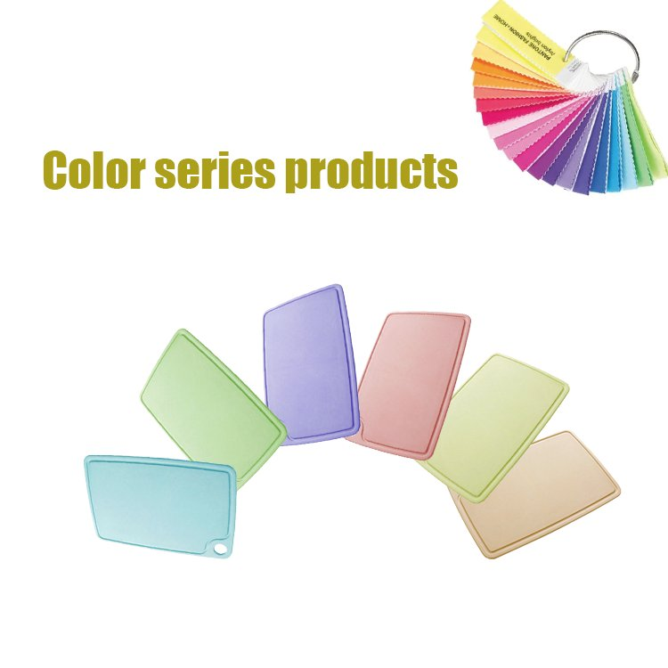
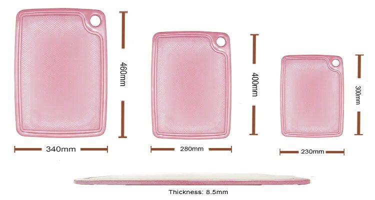
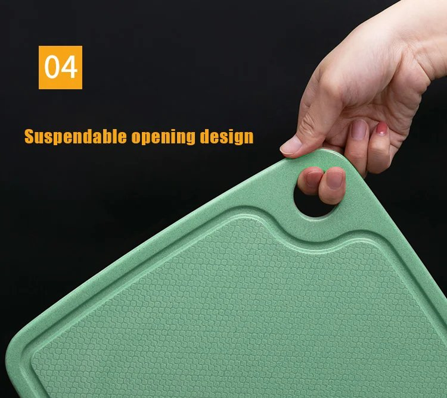
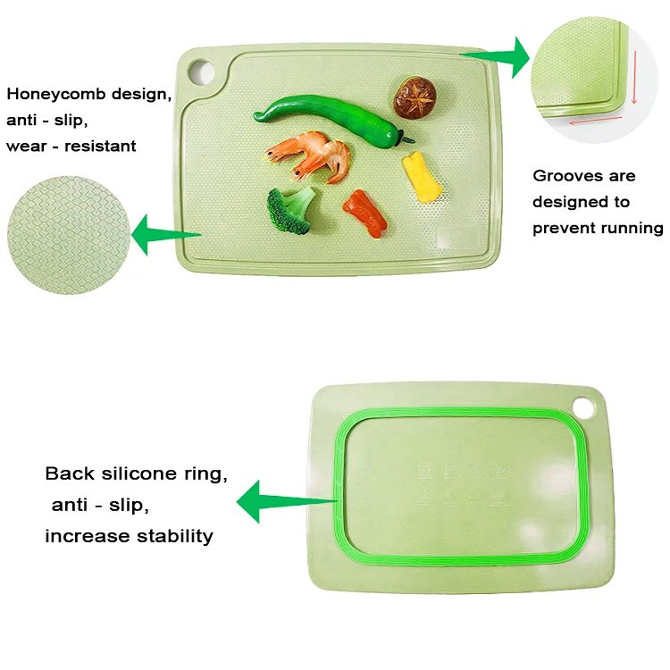

Custom Pantone colour · the flagship board
A coloured cutting board series made from rice husk fibre and matched to your Pantone colour. Three sizes, a juice groove, a hanging hole and a non-slip silicone ring come as standard, with a dense surface that resists knife marks. Built for colour-coded kitchens and own-label ranges.
| Material | Rice husk fibre + food-grade starch binder |
|---|---|
| Sizes | Large 460 × 340 × 8.5 mm (46 × 34 cm) | Medium 400 × 280 × 8.5 mm (40 × 28 cm) | Small 300 × 230 × 8.5 mm (30 × 23 cm) |
| Colour | Custom Pantone colour matching — any shade, any combination |
| MOQ | 500 pcs per colour per size (minimum 2 colours per order) |
| Standard Features | Juice groove · non-slip silicone ring · hanging hole · high-density surface |
| Packaging | Kraft paper box with custom logo and artwork (OEM) |
| Sample Lead Time | Coloured samples in 2–3 weeks |
| Certification | SGS-tested food-contact material; LFGB / REACH statements available |
These are not add-ons. Every coloured board ships with the functional details that make it sell on shelf and work on the line.
A perimeter groove catches juices from meat, fruit and vegetables so they do not run across the counter. It is a detail that matters in a busy kitchen and a strong selling point on a retail box.
A precision-fitted silicone ring on the underside grips the worktop and stops the board sliding during use. If you instead prefer four corner silicone bars, that is a separate anti-slip-dot board — see the range below.

A moulded hanging hole makes the board easy to store in a commercial kitchen and easy to hang on a retail hook. It is a small feature that improves both use and shelf presentation.
Send us a Pantone reference and we will match it across the sizes in your order. Colours are checked against the standard under controlled light so a reorder looks the same as the first run — essential if you sell a colour-coded set. MOQ is 500 pcs per colour per size, with a minimum of two colours per order.
Colour-coded boards are a common control in HACCP-based food-safety systems, separating raw meat, cooked food, vegetables and allergens. Because we match Pantone shades and pack to your artwork, we can supply a consistent set that fits the colour scheme your customers already use in the UK, Australia or New Zealand.
The same coloured board is available with four corner silicone bars instead of a continuous ring, or in natural rice-husk colour for a simpler range.
Anti-Slip Dots Board Silicone Ring BoardSend us your Pantone references, sizes and quantity. We will reply with the spec sheet, MOQ and sample photos.